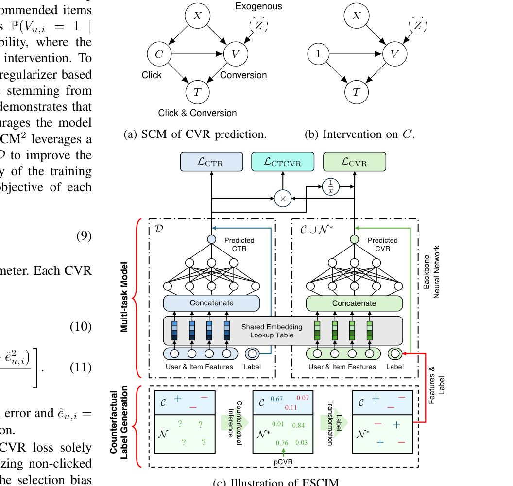

On Predicting Post-Click Conversion Rate via Counterfactual Inference (基于反事实推断的点击后转化率预估)
- 会议/期刊: IEEE ICDM 2025
- 作者与机构: Junhyung Ahn (Naver Corp. / 工作完成于 Dable)、Sanghack Lee (Seoul National University)
- 推荐链路定位: 精排（CVR/CTCVR 预估）
- 研究方向: CTR/CVR 预估与特征交叉 / 去偏与因果推断
- 论文原文: https://arxiv.org/abs/2510.04816v1
- 开源代码: https://github.com/JunhyungAhn/ESCIM
TL;DR (1分钟核心速览)
CVR 预估只能在点击样本上训练，面临选择偏差与极端稀疏（Ali-CCP 中点击率约 3.85%、转化率仅约 0.55%）。本文提出 ESCIM：先用 VAE 对转化外生变量 \(Z\)做后验推断（Abduction），再对未点击样本施加假设干预\(do(C=1)\) 推断反事实 pCVR，最后用 max / ratio 两种策略把连续 pCVR 转成硬标签，与真实点击空间联合训练多任务模型。在 Ali-CCP 与 Ali-Express 四国数据上，CVR/CTCVR AUC 平均提升 1.01%/1.02%；线上 5 天 A/B 中 CVR +17.35%、CTCVR +5.60%、CPA −23.36%。
Background & Motivation (背景与核心矛盾)
- 主流范式: ESMM 类多任务框架在曝光全空间上联合优化 CTR 与 CTCVR，以 \(pCTCVR = pCTR \times pCVR\) 间接监督 CVR；ESCM2 进一步用 IPS/DR 正则去除点击与转化之间的混杂偏差。
- 前人局限: ESMM 假设点击与转化在给定特征下条件独立，导致 CVR 系统性高估；ESCM2 的 IPS/DR 正则仍只在稀缺的点击集 \(\mathcal{C}\)上构造，无法覆盖未点击空间\(\mathcal{N}\)，且从\(\mathcal{C}\)到\(\mathcal{D}\) 的无偏性难以保证。
- DCMT 的启发式缺陷: DCMT 为未点击样本构造镜像反事实空间 \(\mathcal{N}^{*}\)，但一刀切地把所有反事实转化标签置为 1，使\(\mathcal{N}^{*}\)的标签分布与真实点击空间\(\mathcal{C}\) 严重错配，本质上仍是启发式而非因果推导。
- 核心洞察 (Key Insight): 未点击样本的转化标签并非不可知——在"若用户点击了该物品"的假设世界里，其转化结果可由已点击样本学到的因果机制外推；关键在于用 SCM 显式建模外生变量 \(Z\)，而非拍脑袋赋 1。
- 本文切入点: 把"反事实标签生成"拆成 Pre-train → Abduction → Action → Prediction 四步，再用阈值策略把 pCVR 离散化为硬标签，注入多任务训练。
Method (核心方法设计)
1. 整体框架 (Overall Architecture)
ESCIM 分两阶段。阶段一（反事实标签生成）：在点击集 \(\mathcal{C}\)上预训练转化 MLP\(f_\theta(x, z)\)；用 VAE\(g_\phi\)以 ELBO 目标学习外生变量后验\(q_\phi(z) \approx p(Z|X,C,V)\)；对未点击样本施加\(do(C=1)\)切断\(X \to C\)边，采样\(z \sim q_\phi\)后送入\(f_\theta\)得到反事实 pCVR\(\hat{v}^{*}\)；再经 max 或 ratio 策略转为二值标签\(v^{*}\)。阶段二（多任务训练）：以 ESMM 式共享底层 + CTR/CVR 双塔结构，在\(\mathcal{C}\)、\(\mathcal{N}\)、\(\mathcal{N}^{*}\) 三空间联合优化。
flowchart TD
A["点击集 C: (x, c=1, v)"] --> B["Pre-train 转化 MLP f_θ(x,z)"]
A --> C["VAE g_φ 学习后验 q(z|X,C,V)"]
D["未点击集 N: (x, c=0)"] --> E["干预 do(C=1) 构造 N*"]
C --> E
B --> E
E --> F["反事实 pCVR v̂*"]
F --> G["max / ratio 标签变换 → v*"]
G --> H["多任务模型: L_CTR + L_CTCVR + α_F L_CVR-F + α_CF L_CVR-CF"]
2. 关键设计拆解 (Key Designs)
- SCM 建模与反事实推断（Abduction-Action-Prediction）：痛点在于反事实量 \(P(V(C=1)=1 \mid X, C=0, V=0)\)在理论上不可识别，只能靠 SCM 模拟。本文设\(Z \sim \mathcal{N}(0,I)\) 为转化外生变量，用 VAE 以 ELBO 逼近其后验：
直觉：\(Z\)承载"用户为何转化"的隐因子，从已点击且未转化样本中反推\(Z\)的后验，相当于把"未点击用户若被强制点击"的潜在倾向从观测数据中"借"过来，比直接假设\(Z\sim\mathcal{N}(0,I)\) 更贴合真实分布（消融中 AE-US 提升 0.96 个千分点）。
-
两种硬标签变换策略（max / ratio）：连续 pCVR 无法直接当标签用，且反事实空间不确定性高。
max策略以点击集最大 pCVR 为阈值：\(v^{*}_{u,i}=1 \iff \hat{v}^{*}_{u,i} \ge \max_{(u,i)\in\mathcal{C}}\hat{v}_{u,i}\)，即只给"比任何真实点击样本都更可能转化"的样本打正标，极度保守；ratio策略按点击集转化比例外推正例数\(k=|\mathcal{V}|\cdot|\mathcal{N}|/|\mathcal{C}|\)，取反事实 pCVR Top-\(k\) 为正。前者抗噪、后者保分布对齐，二者互补。 -
训练目标与推理开销：总损失为
其中事实项沿用 ESCM2 的 IPS 形式 \(\mathcal{L}_{\text{CVR-F}}=\mathbb{E}_{\mathcal{C}}[\ell(\hat{v},v)/\hat{c}]\)，反事实项为\(\mathcal{L}_{\text{CVR-CF}}=\mathbb{E}_{\mathcal{N}^{*}}[\ell(\hat{v},v^{*})/\hat{c}]\)；\(\alpha_{CF}=0\) 时退化为 ESCM2。反事实标签为离线一次性生成，在线推理与普通 ESMM 完全一致，无额外延迟；训练 Ali-CCP 约 3 小时（4×T4）。
Experimental Setup & Evaluation Protocol (实验设置与评估协议)
- 数据集与预处理: 工业数据按 30/3/1 天时序切分，负采样至点击正负比 5:1；公开数据统计如下（未点击样本天然构成负例，无需额外负采样）：
| 数据集 | #Train | #Val | #Test | #Click | #Conv. | 场景说明 |
|---|---|---|---|---|---|---|
| Industrial | 6.6M | 0.7M | 0.1M | 0.7M | 0.2M | 公司推荐系统 34 天日志 |
| Ali-CCP | 38.1M | 4.2M | 43.3M | 3.3M | 18.3K | 淘宝展示/点击/转化日志 |
| AE-ES / FR / NL / US | 11.0M–21.1M | 1.2M–2.2M | 5.6M–9.3M | 0.4M–0.8M | 10.9K–19.0K | AliExpress 四国搜索日志 |
- 数据划分与防穿越 (Splitting Strategy): 公开数据集沿用官方 Train/Val/Test 划分（随机抽 10% 训练集作验证）；工业数据为全局时间戳切分（30 天训练 / 3 天验证 / 1 天测试），严格防穿越。
- 排名评测协议 (Ranking Protocol): 采用 AUC 评估 CVR 与 CTCVR，属全测试集排序（非采样排序）；每个 backbone 跑 5 个随机种子取均值±标准差，标准差普遍在 0.001–0.003 量级，差异具统计意义。
- 对比基线与超参设置: 基线为 ESMM、Multi-IPS、Multi-DR、ESCM2-IPS、ESCM2-DR、DCMT；backbone 覆盖 MLP、DeepFM、AutoInt、DCN-V2。Embedding 维度 Ali-CCP 为 5、Ali-Express 为 32；\(z\)维度等于总 Embedding 维度；batch 8192，\(\alpha_F=0.1\)、\(\alpha_{CF}=10^{-4}\)，Adam 学习率\(10^{-4}\)。
Key Experimental Results (实验关键数据)
1. 主实验对比 (Main Results)
Ali-CCP 各 backbone（CVR AUC / CTCVR AUC）：
| Method | MLP | DeepFM | AutoInt | DCN-V2 |
|---|---|---|---|---|
| ESMM | 0.6474 / 0.6379 | 0.6398 / 0.6213 | 0.6543 / 0.6302 | 0.6495 / 0.6373 |
| ESCM2-IPS | 0.6691 / 0.6424 | 0.6487 / 0.6281 | 0.6681 / 0.6407 | 0.6609 / 0.6374 |
| ESCM2-DR | 0.6609 / 0.6353 | 0.6502 / 0.6280 | 0.6485 / 0.6329 | 0.6489 / 0.6313 |
| DCMT | 0.6743 / 0.6451 | 0.6528 / 0.6338 | 0.6702 / 0.6389 | 0.6603 / 0.6350 |
| ESCIM-max | 0.6792 / 0.6487 | 0.6585 / 0.6401 | 0.6737 / 0.6413 | 0.6698 / 0.6467 |
| ESCIM-ratio | 0.6756 / 0.6566 | 0.6523 / 0.6382 | 0.6774 / 0.6475 | 0.6683 / 0.6534 |
| Improv.% (vs. DCMT) | +0.73% / +1.78% | +0.87% / +0.99% | +1.07% / +1.35% | +1.44% / +2.90% |
Ali-Express 四国（MLP backbone，CVR / CTCVR AUC）：
| Method | AE-ES | AE-FR | AE-NL | AE-US |
|---|---|---|---|---|
| ESCM2-IPS | 0.8199 / 0.8777 | 0.8078 / 0.8511 | 0.7867 / 0.8511 | 0.8018 / 0.8573 |
| DCMT | 0.8251 / 0.8838 | 0.8089 / 0.8628 | 0.7897 / 0.8525 | 0.8140 / 0.8620 |
| ESCIM-max | 0.8314 / 0.8935 | 0.8210 / 0.8776 | 0.7951 / 0.8613 | 0.8332 / 0.8782 |
| ESCIM-ratio | 0.8305 / 0.8951 | 0.8192 / 0.8821 | 0.7907 / 0.8583 | 0.8201 / 0.8643 |
线上 A/B（5 天，vs. ESCM2-IPS）：CVR 逐日 +21.55%/+16.94%/+12.59%/+17.42%/+18.24%，CTCVR +7.41%/+4.76%/+3.98%/+5.56%/+6.31%，CPA −27.16%/−26.67%/−16.05%/−22.53%/−24.38%，宏平均 CVR +17.35%、CTCVR +5.60%、CPA −23.36%。
2. 消融实验 (Ablation Study)
外生变量 \(Z\) 建模方式（Ali-Express，CVR AUC）：
| 变体 | AE-ES | AE-FR | AE-NL | AE-US |
|---|---|---|---|---|
| w/o \(Z\)（朴素插补） | 0.8284 | 0.8150 | 0.7893 | 0.8185 |
| \(Z\sim\mathcal{N}(0,I)\)（跳过 Abduction） | 0.8269 | 0.8148 | 0.7904 | 0.8236 |
| \(Z\sim p(Z\mid X,C,V)\)（完整 ESCIM） | 0.8314 | 0.8210 | 0.7951 | 0.8332 |
潜在转化数据（Ali-CCP 测试集中训练/验证期未点击、测试期有点击的用户）：
| Method | CVR AUC | CTCVR AUC |
|---|---|---|
| ESCM2-IPS | 0.6724 | 0.6067 |
| ESCM2-DR | 0.6627 | 0.5983 |
| DCMT | 0.6783 | 0.5926 |
| ESCIM-max | 0.6905 | 0.6289 |
3. 关键实验发现 (Key Findings)
- 标签质量是核心增益来源：ESCIM 相对 DCMT 的提升（DCN-V2 上 CTCVR +2.90%）几乎全部来自"不再把所有未点击样本标为 1"——
max与ratio两种策略在 4 个 backbone 上分别拿下 CVR 与 CTCVR 的最优，说明反事实标签的分布对齐比单纯扩大训练空间更重要。 - 后验推断不可省，且朴素高斯假设有害：跳过 Abduction 直接令 \(Z\sim\mathcal{N}(0,I)\)在 AE-ES/AE-FR 上反而低于完全不用\(Z\)（0.8269 vs. 0.8284、0.8148 vs. 0.8150），而完整后验在 AE-US 上带来 +0.96 个千分点，证明"从点击数据反推\(Z\)"是反事实推断有效性的必要条件。
- 对潜在转化用户泛化显著：在训练期从未点击的潜在转化样本上，ESCIM-max 的 CVR/CTCVR AUC 比最强基线 DCMT 高 1.80%/3.66%，且图 4 显示其 pCVR/pCTCVR 分布整体右移，说明反事实训练确实"预演"了未观测的点击-转化路径。
Highlights & Limitations (亮点、对比与审稿批判)
- 与代表作对比 (vs. Prior Work): 与 ESMM 的本质区别是显式建模 \(C \to V\) 的因果方向而非条件独立假设；与 ESCM2 的区别是把去偏从"点击集上的 IPS 正则"扩展到"未点击集上的反事实标签生成"；与 DCMT 的区别是把"全标 1"的启发式替换为 SCM 推断 + 阈值变换，标签分布与事实空间可比。
- 可迁移亮点: (1) "VAE 学外生变量后验 + 干预采样"这套 Abduction-Prediction 流程可直接迁移到曝光偏差、流行度偏差等其他 MNAR 场景的伪标签生成；(2)
ratio策略"按事实空间转化比例外推正例数"是一个极轻量、无需调阈值的分布对齐技巧。 - 审稿级局限批判: (1) 反事实标签为离线一次性硬标签，一旦生成即固定，无法随训练迭代修正，且
max/ratio的阈值选择依赖对 \(\mathcal{C}\)与\(\mathcal{N}^{*}\)分布相似的强假设；(2) 目标中 IPS 权重\(1/\hat{c}\)的方差问题未解决，附录图 5 显示\(\alpha_{CF}\)从\(10^{-4}\)增至\(10^{-1}\) 时 CVR AUC 下降 5.56%，对超参较敏感，且整体效果高度依赖 CTR 估计精度。
Rating (四维评分)
- 方法创新性 (Novelty): ⭐⭐⭐⭐ （首次把完整 SCM 反事实推断流程用于未点击样本的 CVR 伪标签生成，替代 DCMT 的启发式全标 1，因果建模链条完整）
- 评估协议与实验扎实度 (Protocol & Experiments): ⭐⭐⭐⭐⭐ （2 个公开数据集 + 4 国子集 + 4 种 backbone + 5 种子标准差 + 5 天线上 A/B + 潜在转化专项分析，覆盖度在 CVR 去偏方向属上乘）
- 写作与数学规范度 (Clarity & Rigor): ⭐⭐⭐⭐ （SCM 图、三算法伪代码与 ELBO 推导清晰，且诚实讨论了反事实量不可识别性；但部分符号在正文与附录间略有重复定义）
- 工业落地与复现价值 (Industrial & Practical Value): ⭐⭐⭐⭐⭐ （反事实标签离线生成、在线推理零额外开销，线上 CPA 降 23.36% 直接对应广告成本，代码已开源，工程迁移成本极低）